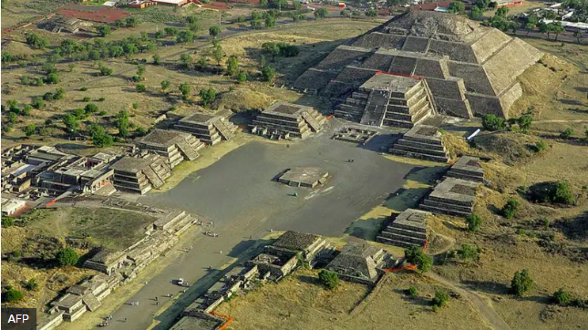

¿Qué fueron las civilizaciones mesoamericanas?
Las civilizaciones mesoamericanas fueron sociedades que se desarrollaron en una región cultural conocida como Mesoamérica. Compartieron características como la agricultura, la construcción de centros ceremoniales, el uso de calendarios y diferentes formas de organización política y religiosa.

Ubicación geográfica
Mesoamérica comprendió parte del territorio actual de México y algunos países de Centroamérica. Su desarrollo estuvo relacionado con las condiciones naturales que favorecieron la agricultura y el establecimiento de comunidades.
Principales culturas mesoamericanas
- Olmecas: considerados una de las primeras grandes culturas mesoamericanas.
- Mayas: destacaron por sus conocimientos matemáticos, astronómicos y escritura.
- Teotihuacanos: construyeron una de las ciudades más importantes de la región.
- Zapotecas: desarrollaron importantes centros urbanos, como Monte Albán.
- Mexicas: fundaron México-Tenochtitlan y formaron un poderoso imperio.
Organización social y política
Las sociedades mesoamericanas tenían diferentes formas de organización. Generalmente existían gobernantes, sacerdotes, guerreros, comerciantes, artesanos y campesinos. Cada grupo desempeñaba una función importante dentro de la comunidad.
Economía
La agricultura fue una de las principales actividades económicas. Cultivaban productos como maíz, frijol, chile y calabaza. También practicaban el comercio, la caza, la pesca y la elaboración de artesanías.
Religión y creencias
Las civilizaciones mesoamericanas eran politeístas, es decir, adoraban a diferentes dioses relacionados con la naturaleza, la agricultura, la lluvia, el sol y otros elementos de su vida cotidiana.
Legado cultural
El legado de estas civilizaciones continúa presente en México. Algunas de sus aportaciones fueron los sistemas de numeración, calendarios, conocimientos agrícolas, arquitectura, arte y tradiciones que forman parte de nuestra herencia cultural.
Datos curiosos
Presiona el botón para descubrir algunos datos interesantes sobre Mesoamérica.
Fuentes de consulta
Para conocer más sobre las civilizaciones mesoamericanas puedes consultar: